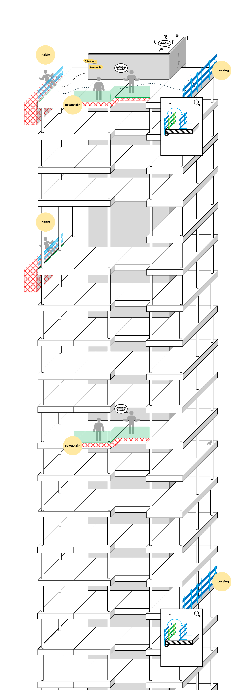

Scan randvalgevaren direct in IFC-modellen en maak veiligheid onderdeel van de voorbereiding.
Bekijk op GitHubRanden behoren tot de grootste valrisico’s op bouwplaatsen. Toch worden ze zelden al inzichtelijk gemaakt in BIM.
Markeert valgevaarzones automatisch
EdgeProtector ondersteunt de Industry 5.0 visie waarin digitale analyse en menselijke expertise samen zorgen voor betere veiligheidsbeslissingen in een vroeg stadium.
EdgeProtector analyseert IFC-modellen en markeert automatisch randvalzones. Hierdoor ontstaat vroegtijdig inzicht in noodzakelijke randbeveiliging tijdens de voorbereiding.

Open een IFC-model
Start EdgeProtector scan
Bekijk direct gemarkeerde risicogebieden
BIM
Aannemers